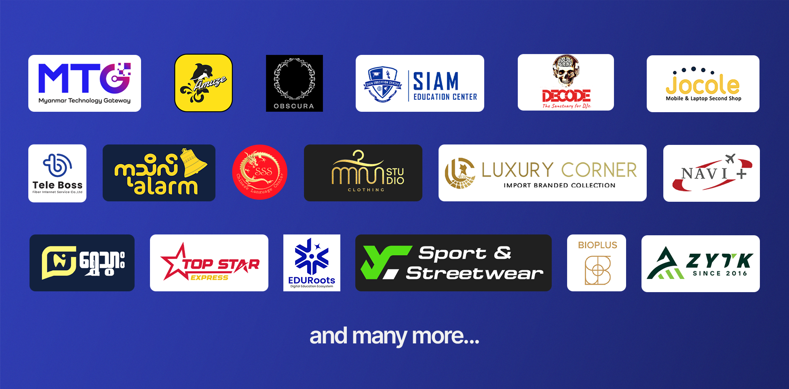
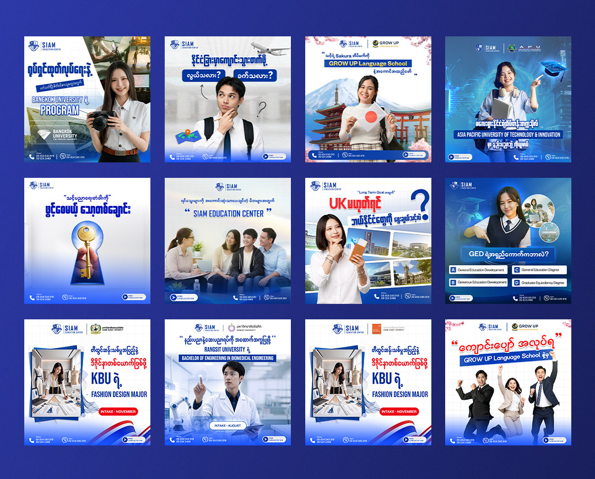
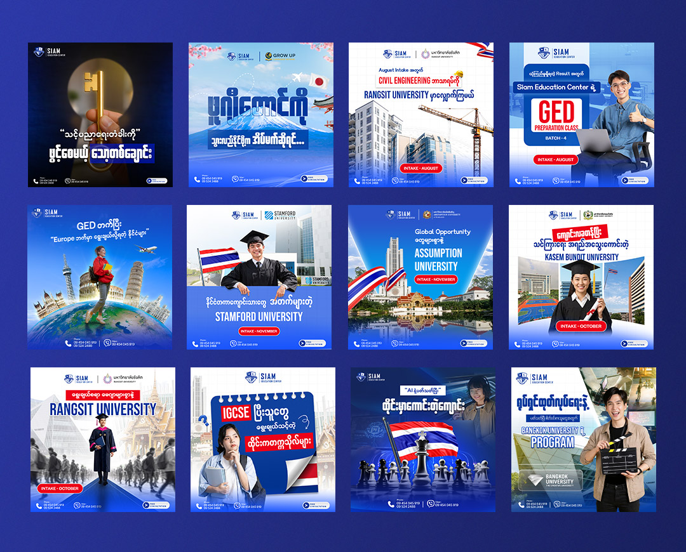
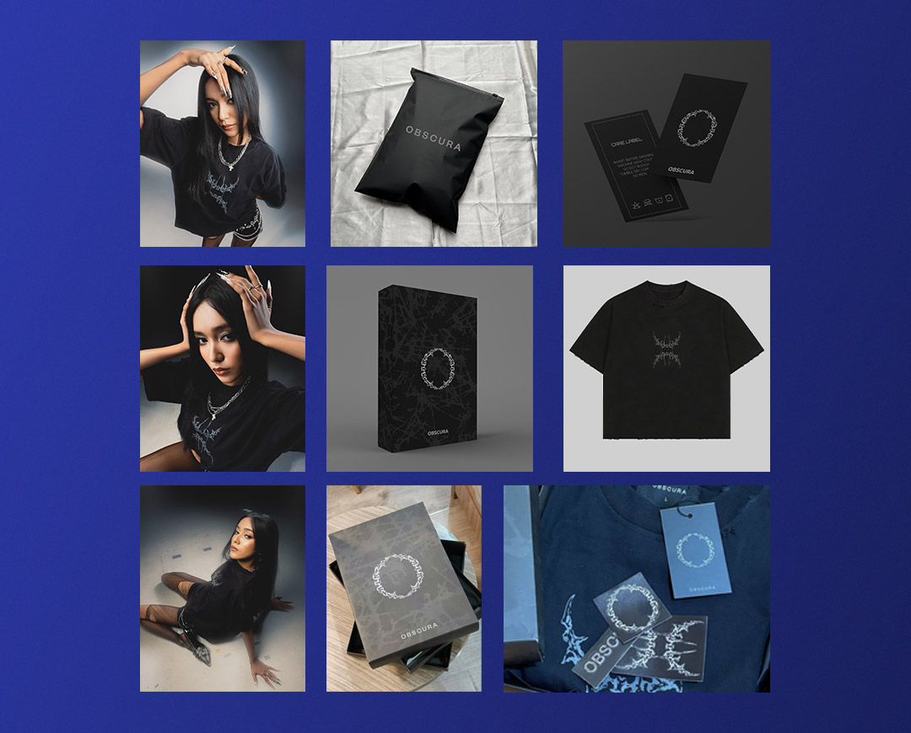
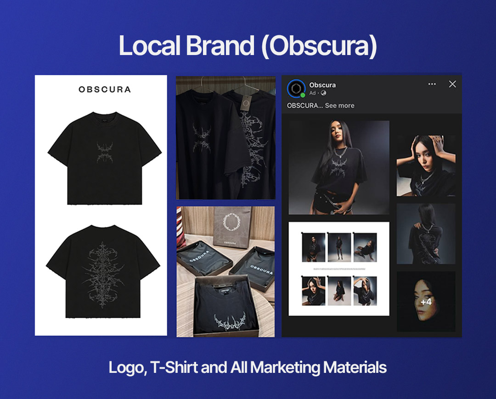

My Clients
Client တစ်ဦးချင်းစီရဲ့ လိုအပ်ချက်နဲ့ Brand Direction အပေါ်မူတည်ပြီး ဖန်တီးပေးခဲ့တဲ့ Graphic Design Projects တွေထဲက Selected Works အချို့ကို ဒီနေရာမှာ ဖော်ပြထားပါတယ်။
Focus
Client Design
Role
Graphic Designer
Services
Visual Design
Tools
Photoshop · Illustrator

Client Work အကြောင်း
Client Project တွေမှာ Design တစ်ခုချင်းစီကို လှပအောင်ဖန်တီးရုံသာမက Client ရဲ့ ရည်ရွယ်ချက်၊ Target Audience နဲ့ အသုံးပြုမယ့် Platform ကိုပါ ထည့်သွင်းစဉ်းစားပြီး Design Direction ချမှတ်ပါတယ်။
Social Media Content၊ Promotional Materials၊ Event Design နဲ့ Marketing Visuals စတဲ့ Project အမျိုးမျိုးကို Client ရဲ့ Requirement နဲ့ကိုက်ညီအောင် ဖန်တီးပေးခဲ့ပါတယ်။
Selected Work
Client Projects




What I Do
Design Services
Social Media Design
Social Media Campaign၊ Promotional Post နဲ့ Content Visual တွေကို Brand Direction နဲ့ ကိုက်ညီအောင် ဖန်တီးပေးပါတယ်။
Marketing Design
Marketing Campaign တွေအတွက် Poster၊ Banner နဲ့ Promotional Materials တွေ ဖန်တီးပေးပါတယ်။
Event Design
Event အတွက် Banner၊ Invitation၊ Backdrop နဲ့ Supporting Visual Materials တွေကို Design လုပ်ပေးပါတယ်။
My Design Process
Project တစ်ခုချင်းစီကို Client ရဲ့ Brief ကို နားလည်ခြင်းကနေစပြီး Final Design အထိ ရိုးရှင်းပြီး ထိရောက်တဲ့ Process နဲ့ လုပ်ဆောင်ပါတယ်။
Brief & Understanding
Client ရဲ့ Requirement၊ Target Audience နဲ့ Project Goal ကို နားလည်အောင် လေ့လာပါတယ်။
Design & Development
Concept နဲ့ Visual Direction ကို ဖန်တီးပြီး လိုအပ်တဲ့ Design Elements တွေကို ပေါင်းစပ်ပါတယ်။
Revision & Final
Client Feedback အပေါ်မူတည်ပြီး ပြန်လည်ပြင်ဆင်ကာ Final Design ကို အသုံးပြုနိုင်တဲ့ Format နဲ့ ပေးအပ်ပါတယ်။
Working With Clients
Client Project တွေကနေတစ်ဆင့် Different Industries, Different Audiences နဲ့ Different Design Requirements တွေကို လေ့လာခွင့်ရခဲ့ပါတယ်။
ကျွန်တော့်ရဲ့ Design Approach က Creativity နဲ့ Visual Quality ကို ထိန်းသိမ်းထားရင်း Client ရဲ့ Business Goal ကို အထောက်အကူဖြစ်စေမယ့် Design Solution ကို ဖန်တီးပေးဖို့ ဖြစ်ပါတယ်။
Let's Work Together
Have a design project in mind?
Let's create visuals that communicate your brand clearly.
Start a project →